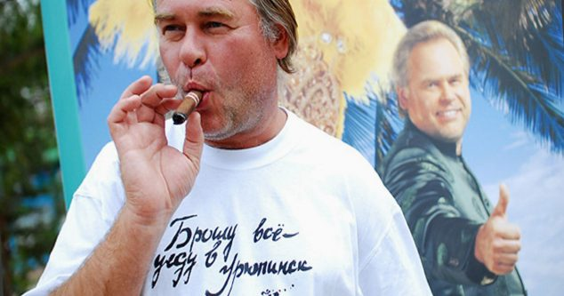

Интересные факты
1997: Основание "Лаборатории Касперского"
Генеральный директор "Лаборатории Касперского", дебют в кино
2009: Член Общественной палаты РФ
2010: Член Консультативного научного совета «Сколково»
2011: Forbes оценивает состояние Касперского в $800 млн
2012: Оценка состояния Forbes - $700 млн / Поддержка инициативы Еврокомиссии по борьбе с киберприступностью / Включение в список самых опасных людей мира Wired / Сотрудники записали клип в честь дня рождения Евгения Касперского
2013: 134 место в Forbes с состоянием $800 млн
2014: 118 место в Forbes с состоянием $900 млн
2015: 86 место в Forbes с состоянием $1 млрд
2016: 66 место в Forbes с состоянием $1,1 млрд
2017: 70 место в Forbes с состоянием $1,3 млрд
2020: Путин назвал Евгения Касперского российским Илоном Маском / Касперский — о травле в США и суверенном рунете
2022: Вхождение в список крупнейших ИТ-миллиардеров России
2024: Создание именной стипендии
2090: Уехал на Камчатку